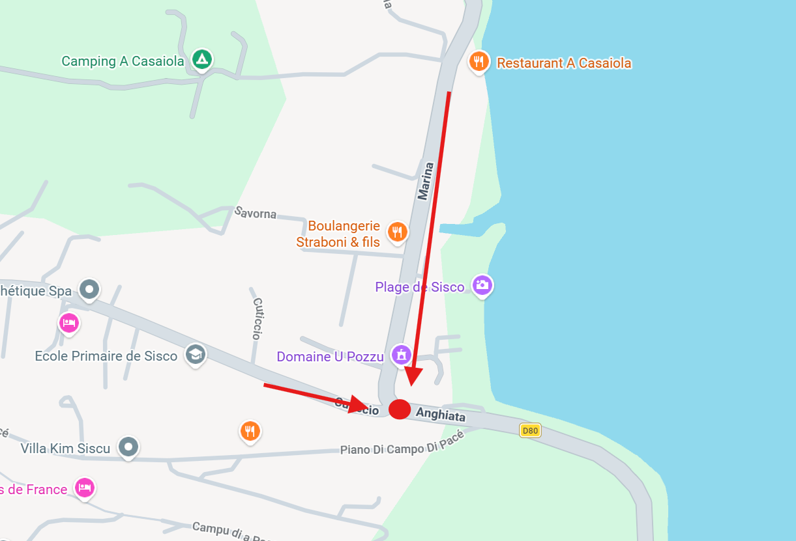
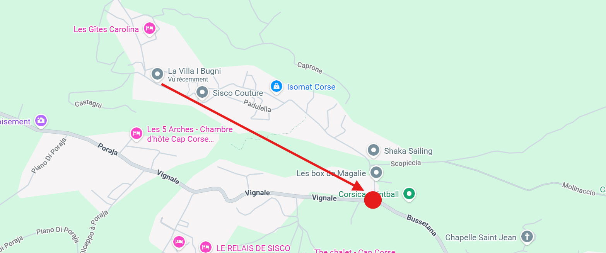
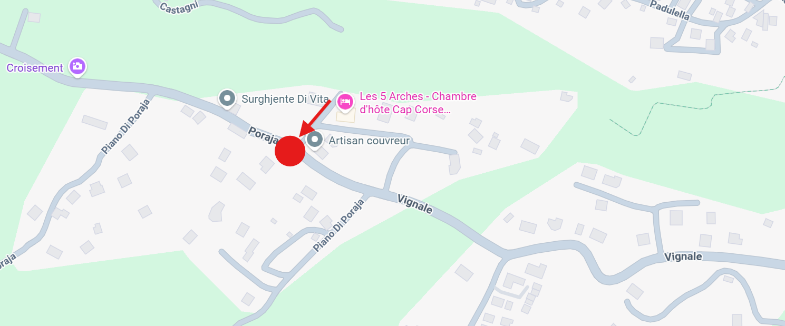
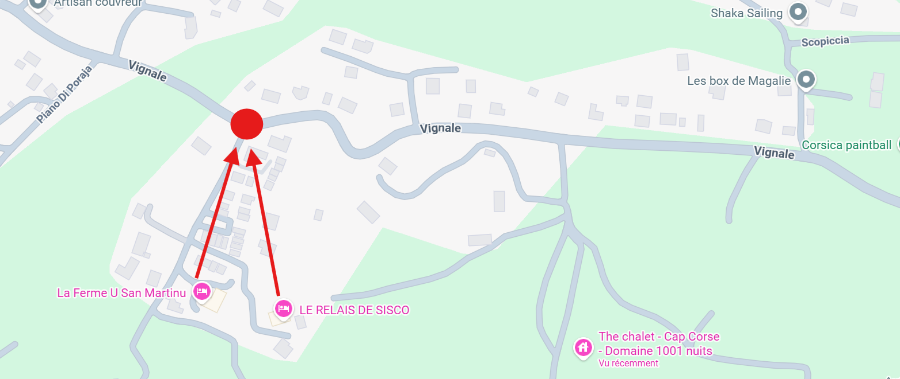
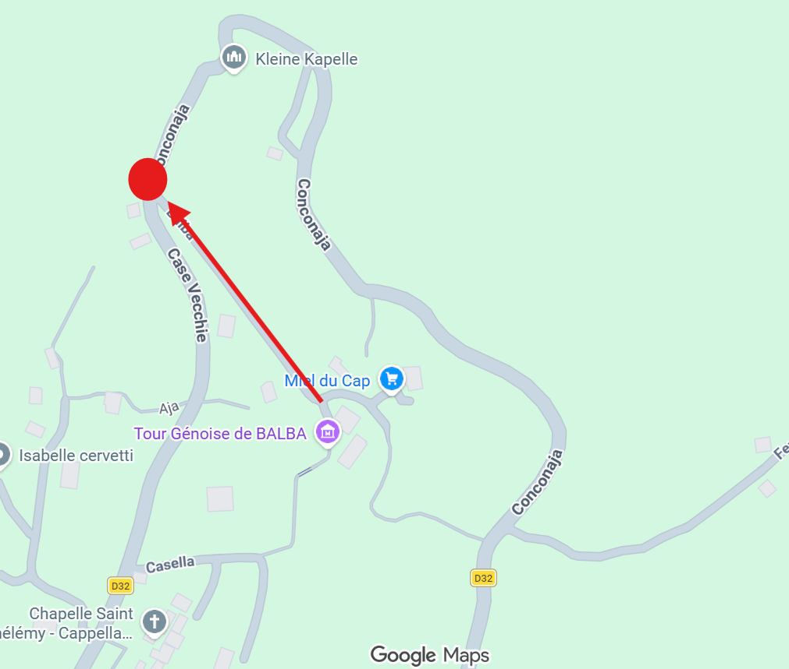
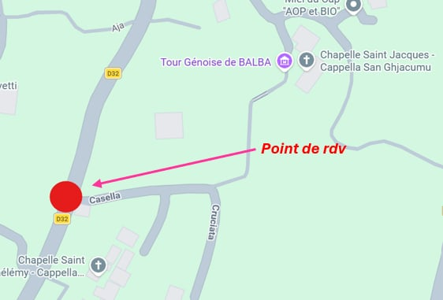

Le Programme
On a hâte de vous retrouver en Corse ! Voici toutes les infos pratiques pour le week-end.
Samedi 4 juillet 2026
Le mariage civil aura lieu à la mairie de Sisco, situé dans le hameau de Munacaghja, en haut de la vallée de Sisco, à 16H30.
La cérémonie laïque aura ensuite lieu vers 18h dans le hameau de Balba.
A partir de 19h la soirée commencera et aura lieu entièrement dans le hameau de Balba, sur la place du village.
🚌 Navettes aller
Pour faciliter les déplacements entre les différents hameaux, nous avons prévu deux bus qui viendront vous chercher dans vos différents logements aux horaires suivantes :
- 15H40 pour les personnes logeant à la marine de Sisco (au Pozzu ou autre) – lieu de rdv : devant l'hôtel U Pozzu. Bus 49 places.

- 15H45 pour les personnes logeant au 1001 nuits – lieu de rdv : devant l'entrée de l'hôtel. Bus 49 places.
- 15H50 pour les personnes logeant à Crosciano - lieu de rdv: sur la D32, à l'entrée du village (10 min de marche). Bus 49 places.

-
15h55 pour les personnes logeant aux 5 arches. Lieu de rdv sur la D32. Bus 49 places.

-
16h00 pour les personnes logeant au Relais de Sisco ou à la ferme U San Martinu. Lieu de rdv sur la D32. Bus 23 places.

-
16h05 pour les personnes logeant à Balba. Lieu de rdv sur la D32. Bus 49 places.

-
16h10 pour les personnes logeant à Casella. Lieu de rdv sur la D32. Bus 49 places.

🚌 Navettes retour
Pendant la soirée, un système de navettes (mini bus) sera à votre disposition pour vous permettre de rentrer en toute tranquillité dans vos différents logements à Sisco à partir de minuit.
🚗 Venir en voiture
Vous pouvez aussi utiliser votre voiture si vous le souhaitez mais nous attirons votre attention sur plusieurs points :
- La route (D32) qui part de la Marine et dessert tous les hameaux de la vallée est très sinueuse et les croisements entre voitures ne sont pas toujours possibles (quelques manœuvres à prévoir)
- Le nombre de places de stationnement dans les villages est très limité et nous ne souhaitons pas engorger Balba (hameau où aura lieu la soirée) avec des voitures peu décoratives
- Il peut y avoir des contrôles policiers à la marine de Sisco le samedi soir avec éthylotests
Dimanche 5 juillet 2026
Le brunch commencera à partir de 11h30 au domaine du Pozzu, situé à la Marine de Sisco. Nous serons en bord de mer avec possibilité de se baigner donc n'oubliez pas vos maillots de bain !
Pas de service de navette car un grand parking est disponible.
🚌 Comment venir depuis l'aéroport ?
L'aéroport de Bastia-Poretta est à environ 1h15 de Sisco. Voici comment rejoindre la vallée sans voiture :
✈️ Depuis l'aéroport jusqu'à Bastia
Des navettes sont disponibles depuis l'aéroport et partent généralement après l'arrivée des avions. Elles amènent directement à la gare de Bastia. Plus d'infos sur les horaires : navettes aéroport Bastia-Poretta.
Depuis l'arrêt, comptez une dizaine de minutes à pied jusqu'à la place Saint-Nicolas.
🚌 Depuis Bastia jusqu'à Sisco
Des bus relient Bastia à Sisco depuis le bas de la place Saint-Nicolas. Attention : pas de bus le dimanche. Les départs ont lieu entre 8h et 18h. Consultez les horaires détaillés sur le site de la mairie de Sisco.
Il y a ensuite une vingtaine de minutes de marche pour aller au relais de sisco.